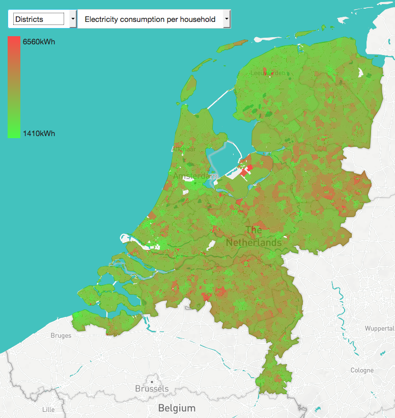
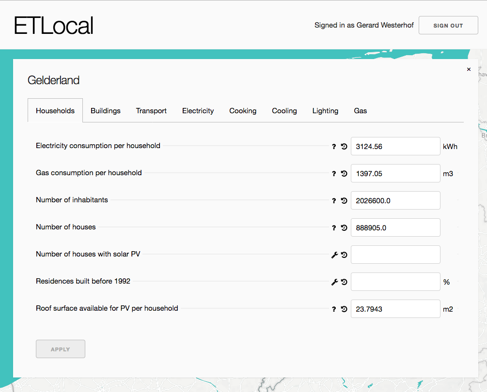
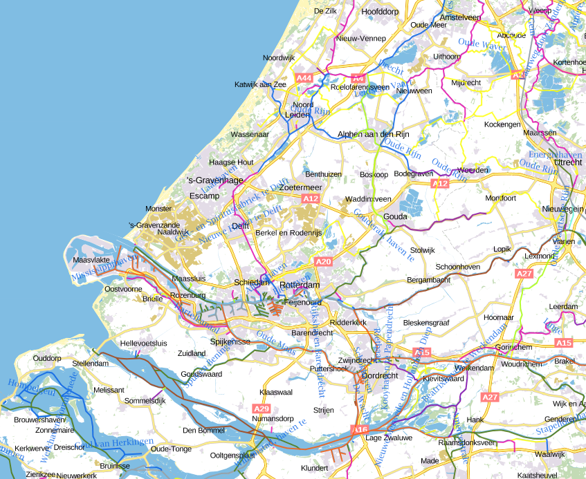

class: center, middle # ETLocal ## 05-07 --- # Agenda 1. Wat is ETLocal nu? 2. Waar kan ETLocal heen gaan? 3. Beslispunten --- class: center, middle # Wat is ETLocal nu? 1. Visuele interface (Huidige - en korte-termijn nieuwe functionaliteit) 2. Dataset generator (Huidige - en korte-termijn nieuwe functionaliteit) --- class: center, middle # 1. Visuele interface --- # Visuele interface [1/2]  *Wat kan het?* Plot 6 startwaarden ... - Electriciteitsverbruik per huishouden - Gasverbruik per huishouden - Aantal inwoners - Aantal auto's - Aantal woonhuizen - Dakoppervlakte beschikbaar zon ... op 3 niveau's van Nederland - Provincies - Gemeentes - Wijken --- # Visuele interface [2/2] *Wat kan het nog niet?* - In/uitzoomen om een beter beeld te krijgen van visuele informatie - Het visualiseren van meerdere lagen - Niet mouse-overen om bijv. waardes uit te lezen - Er is geen keuzevrijheid om de kleurenschaal te bepalen (logaritmisch, lineair, etc.) --- class: center, middle # 2. Dataset generator --- # Dataset generator [1/4]  --- # Dataset generator [2/4] *Wat kan het?* - Start waarden + aannames transformeren naar 'initializer inputs' - Startwaarden (bv. electriciteitsverbuik, gasverbruik, etc.) - Aannames (bv. hoeveel procent electriciteit gaat naar ruimteverwarming, slider groups) - Deze waarden + aannames vastleggen - Geschiedenis bijhouden wie/wat/waarom heeft aangepast (git log) - Exporteren 'initializer inputs' naar *bestaande* dataset ETSource --- # Dataset generator [3/4] Status <table cellpadding="4" style="font-size: 80%;"> <tr> <td></td> <td>Huishoudens</td> <td>Gebouwen</td> <td>Transport</td> <td>Industrie</td> <td>Landbouw</td> <td>Supply</td> <td>Overig</td> </tr> <tr> <td>Startwaarden zijn aan te passen</td> <td><div style="background-color: green;"><br/></div></td> <td><div style="background-color: orange;"><br/></div></td> <td><div style="background-color: orange;"><br/></div></td> <td><div style="background-color: green;"><br/></div></td> <td><div style="background-color: green;"><br/></div></td> <td><div style="background-color: green;"><br/></div></td> <td><div style="background-color: red;"><br/></div></td> </tr> <tr> <td>Aannames zijn aan te passen</td> <td><div style="background-color: orange;"><br/></div></td> <td><div style="background-color: red;"><br/></div></td> <td><div style="background-color: red;"><br/></div></td> <td><div style="background-color: red;"><br/></div></td> <td><div style="background-color: orange;"><br/></div></td> <td><div style="background-color: red;"><br/></div></td> <td><div style="background-color: red;"><br/></div></td> </tr> <tr> <td>Moeilijkheidsgraad verbeteren huidige implementatie</td> <td><div style="background-color: green;"><br/></div></td> <td><div style="background-color: green;"><br/></div></td> <td><div style="background-color: orange;"><br/></div></td> <td><div style="background-color: red;"><br/></div></td> <td><div style="background-color: orange;"><br/></div></td> <td><div style="background-color: orange;"><br/></div></td> <td><div style="background-color: orange;"><br/></div></td> </tr> <tr> <td>Percentage compleet</td> <td>80%</td> <td>30%</td> <td>30%</td> <td>50%</td> <td>50%</td> <td>30%</td> <td>0%</td> </tr> </table> --- # Dataset generator [4/4] <img src="images/3.png" style="width:350px"/> *Wat kan het nog niet?* - Analyse niet aanroepbaar vanuit interface - Moet uiteindelijk aansluiten op initialiseren van huidige situatie van een scenario - Transfomeren startwaarden → initializer inputs - Schalen Nederlandse dataset - Opzetten huidige situatie scenario (present) - Er is geen status voor een regio / dataset (bijv. frozen?, in review?, open?) - Communiceert nog geen kwaliteit van input - Mist inzicht in gemaakt rekenstappen --- class: center, middle # Waar kan ETLocal heen gaan? 1. Visuele interface (Lange termijn functionaliteit) 2. Dataset generator (Lange termijn functionaliteit) 3. ETM Integratie (Project) --- class: center, middle # 1. Visuele interface --- # Visuele interface [1/10] - Toevoegen van meerdere lagen statische informatie - Toevoegen van meerdere lagen dynamische informatie (i.e. results from ETM) <!-- TODO: TOEVOEGEN SLIDES MET VOORBEELDEN --> --- # Visuele interface - statisch [2/10] *BAG panden* <img src="images/6.png" style="width:450px"/> --- # Visuele interface - statisch [3/10] *Agrarsich areaal Nederland* <img src="images/7.png" style="width:500px"/> --- # Visuele interface - statisch [4/10] *Binnenvaart routes*  --- # Visuele interface - statisch [5/10] *Windsnelheden boven 100m* <img src="images/9.png" style="width:500px"/> --- # Visuele interface - statisch [6/10] *Potentieel warmte opslag gesloten WKO systemen per buurt* <img src="images/10.png" style="width:500px"/> --- # Visuele interface [10/10] **Waarom is dit nodig?** - In het verkennende stadium van mensen behoefte aan geoegrafische context voorafgaand aan energetische vragen - Het is een aangetoond gebrek in ETModel t.o.v. de 'concurrentie' --- class: center, middle # 2. Dataset generator --- # Dataset generator [1/2] - Uitbreiden analyse nieuwe startwaarden - Alle waarden die worden aangenomen tijdens de analyse zelf moeten kunnen worden aangepast - De flow van de startwaarden naar de uiteindelijke huidige situatie van een scenario moet inzichtelijk worden - Startwaarden + aannames inladen van een andere regio --- # Dataset generator [2/2] **Waarom?** ? --- class: center, middle # 3. ETM Integratie --- # ETM Integratie [1/2] - Verplaatsen interface onderdelen ETLocal → ETModel - Een ETM hebben voor elke regio - Het dataset keuze menu moet worden vervangen met iets netters --- # ETM Integratie [2/2] **Waarom?** - Alles in 1 - Scenarios kunnen aanmaken elke regio --- class: center, middle # Beslispunten --- # Voorgesteld proces - 2 wekelijkse sprint waar ik (Gerard) aan gaat werken - Duidelijke deliverables (updates hierover gaan naar qi@quintel.com) - Ideeen / inspiratie / vragen / concerns → mail mij, plan meeting --- # Voorgestelde sprint ---